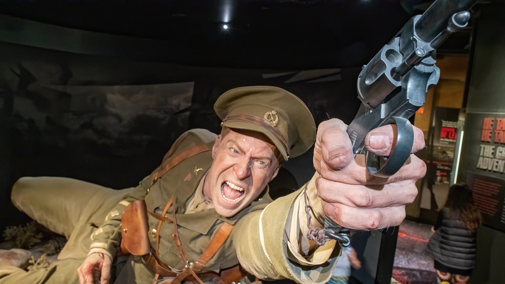
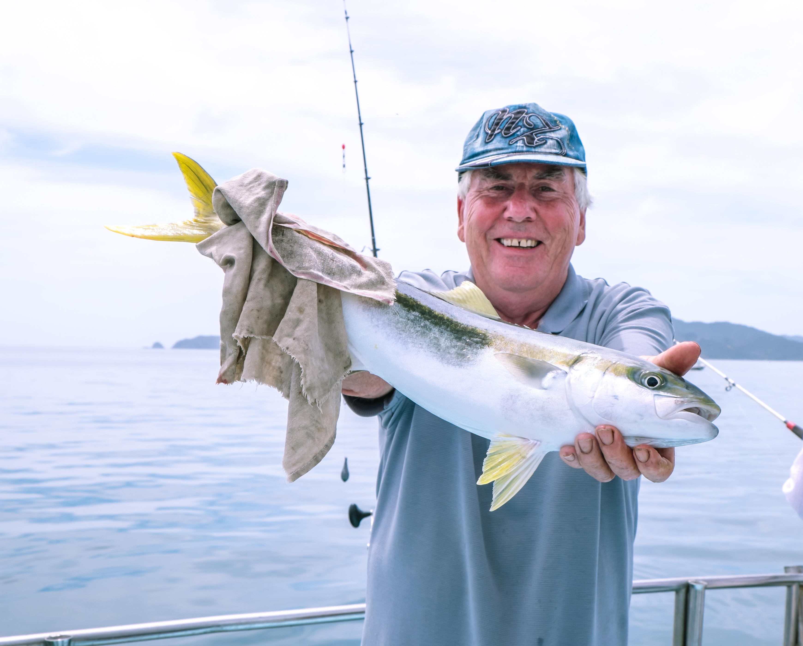

Home
Regions
West Coast
Marlborough
Central Otago
Wellington
Auckland
Map
History
Contact
Wellington
Te Whanganui-a-Tara
Check out The Long Weekends top five things to do in the wellington regon!

Te Papa
If you're new to New Zealand, Museum of New Zealand Te Papa Tongarewa should be at the top of your to-do list. This national museum is a must-do, with six storeys of cutting-edge interactive exhibitions housed in an architectural wonder of a building.
Explore Welingtons Cafe Scene
Upon arriving in New Zealand’s fun little capital, it will not be long before you stumble across your first Wellington café, and that is because they are everywhere. Rumoured to have more cafés, bars and restaurants per capita than New York, the café scene in Wellington punches well above its weight on the world stage. It would be rude not to immediately partake in drinking some of the best coffee around, so once you have stepped off the ferry or plane, make your way into the CBD and get your hands around a cup of the good stuff. Hosted by fun-loving, cheerful waitstaff, cafés in Wellington are a huge part of what makes the city tick, and if you wanted colour, entertainment, quirky decor and top rate food and drinks, then you have come to the right place.

Fishing Wellington
Often overlooked by Wellington’s boaties is Wellington’s Harbour. It can produce as good a days fishing as anywhere else around Wellington's varied coastlines. Kingfish, Snapper, Tarakihi and Gurnard, plus all sorts of the more unusual fish species.
Weta Studios
Weta Workshop is your gateway to filmmaking creativity. Join our guided tours to learn about the making of movie effects; from armour to weapons, creatures to costumes, make-up to miniatures, and more! Get up close to fantastical physical effects and authentic props. Test your guide's knowledge. Immerse yourself in our incredible small-group tours and discover how imaginary worlds are brought to life.
Mount Victoria
Mount Victoria provides stunning 360 degree views of Wellington City, the harbour and the ocean to the south. Car and bus access is via Alexandra Road, while walking tracks lead from Oriental Parade and Majoribanks Street. Legend has it that Wellington harbour, originally a land-locked lake, was home to two large and very active taniwha (sea monsters). One taniwha forged a passage to the open sea creating the entrance to the harbour. The second, named Whataitai, tried a different route, became stranded and died. It is believed that Tangi-te keo (Mt Victoria) was named after the soul of Whataitai.


{kind=link}
{kind=link}